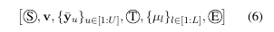
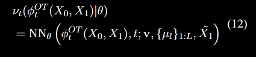
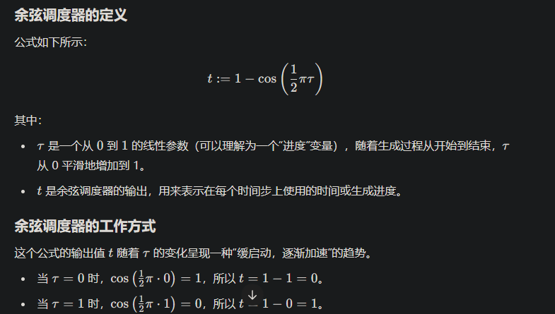
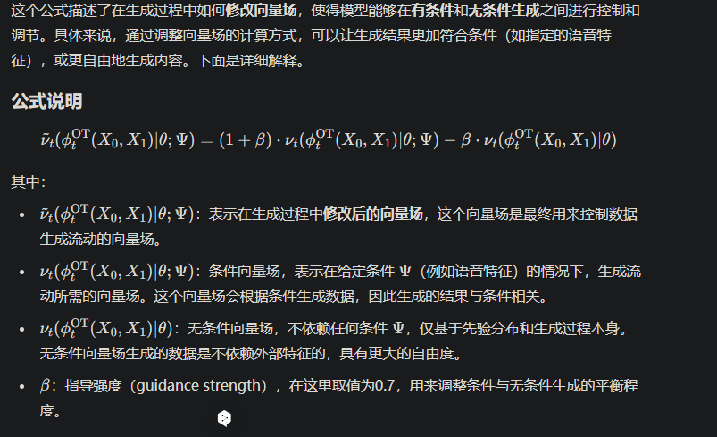

CozyVoice
Information
- 标题：论文的完整标题
- 单位：列出所有作者的名字
- 发表期刊/会议：论文发表的期刊或会议名称
- DOI或链接：如果有，提供论文的DOI或链接，方便查阅
Related work
Motivation
method
Large Language Model for TTS


在LLM中的序列的构造如下：
- S 表示说话者嵌入向量。
- \(\bar{Y} = \mathrm{TextEncoder}(\mathrm{BPE}(Y))\) BPE通过将常见的字节对（或字符对）合并成一个新的符号，从而减少词汇表的大小，同时可以处理未登录词。\(text \ encoder\)把 speech 和 text 进行对齐。
- \({\mu_l}\)通过上文提到的Tokenizer转化。
- E 为结束标志
在训练的过程中，采用
- 教师强制（Teacher Forcing）：模型在每个时间步的输入是前一个时间步的真实输出，而不是模型在前一个时间步的预测值。
- 计算 Tokenizer 的损失，包括结束令牌，共\(L+1\)个
损失函数如下：
\(\mathcal{L}_{LM} = -\frac{1}{L+1}\sum_{l=1}^{L+1}{\log{q(\mu_l)}}\)
- 求平均是为了使得不同长度的具有可比性
- 使用log是使得\(q(\mu_i)\)较小的时候受到的惩罚加大
- \(q(\mu_l)\)是使用了softmax
Optimal-transport Conditional Flow Matching
Optimal-transport Conditional Flow Matching比扩散概率模型（DPMs）梯度简单，更容易训练，生成速度更快
其学习mel谱的分布，并与生成的tokens进行联系。
\(\nu_t(X): [0,1]\times \mathbb{R}^{L*D}\rightarrow \mathbb{R}^{L*D}\)是一个与时间有关的向量场
在\(\frac{d}{dt}{\phi_t{(X)}} = \nu_t(\phi_t(X), t)\)中，\(\nu_t\)表示\(\phi_t\)的方向以及大小
原始的分布是\(\phi_0(X) \sim p_0(X)=\mathcal{N}(X;0,I)\) 目标分布就是最终的mel的分布：\(\phi_1(X) \sim p_1(X)\)
-
q(X)：表示真实的语音分布（speech distribution），也就是我们希望生成的数据的实际分布，比如梅尔频谱图的分布。这是一个未知的分布，通常通过真实的语音数据来近似。
-
\(p_1(X)\)：表示通过流动模型生成的目标分布，即通过模型从初始分布 \(p_0(X)\) 演化而来的分布。这个分布是通过解方程（9）得到的，是我们希望用来近似 \(q(X)\) 的分布。
近似的实现方式
-
通过向量场学习：通过定义向量场并最小化损失函数，模型可以学习如何从\(p_0\)流动到\(p_1\)
-
采样：从生成的\(p_1\)中采样，作为\(q(X)\)的样本
为了让模型学习得到\(\nu_t\)，使用如下的损失函数：\(\mathcal{L}_{OT-CFM} = \mathbb{E}_{t,p_0(X_0),q(X_1)}| \omega_t(\phi^{OT}_t(X_0,X_1)|X_1) - \nu_t(\phi^{OT}_t(X_0,X_1)|\theta) |\)
\(\phi^{OT}_t(X_0,X_1)=(1-(1-\sigma)t)X_0+tX_1 \omega_t(\phi^{OT}_t(X_0,X_1)|X_1)=X_1-(1-\sigma)X_0\)


由于在一开始生成比较困难，所以在开始的时候缓慢地启动。
\(\Psi=\{\mathbf{v}, \{\mu_l\}_{1:L}, \tilde{X_1}\}\)被0.2概率抛弃，就算有无condition，模型都可以输出。
